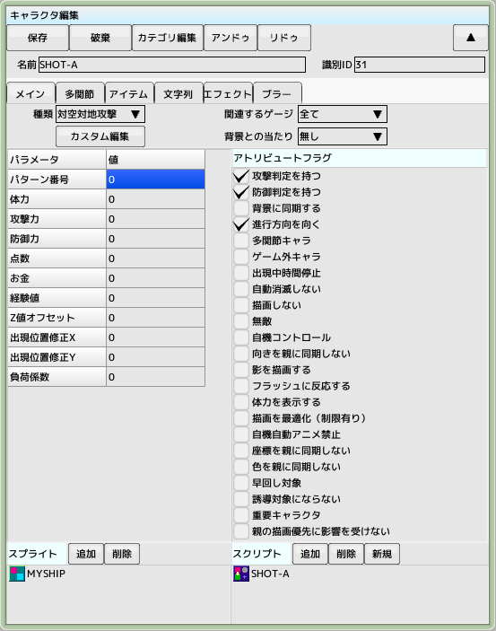
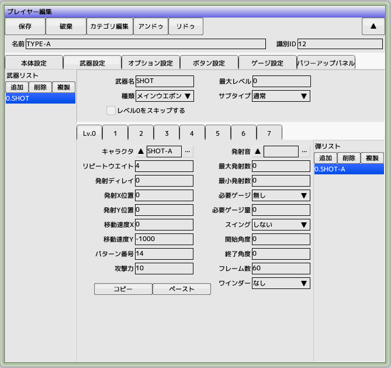
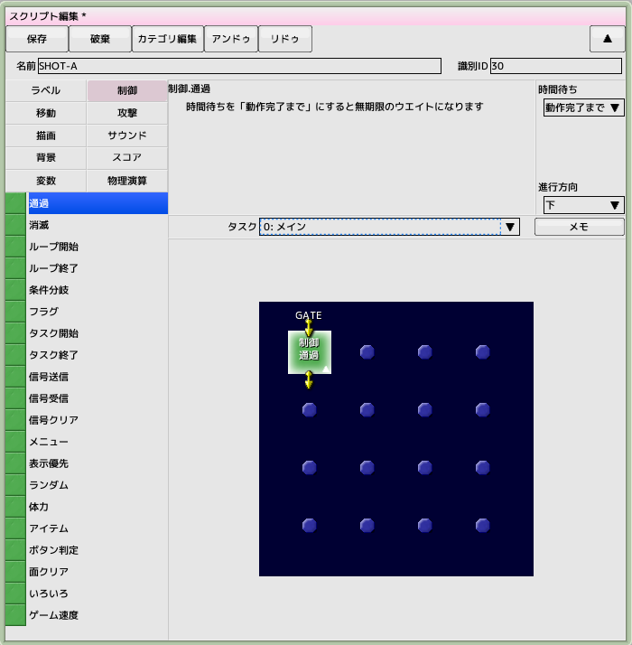
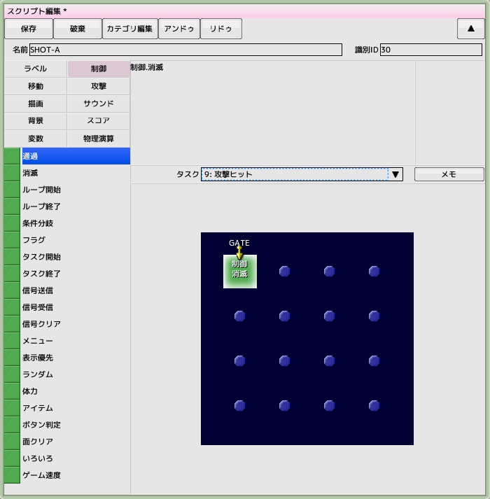
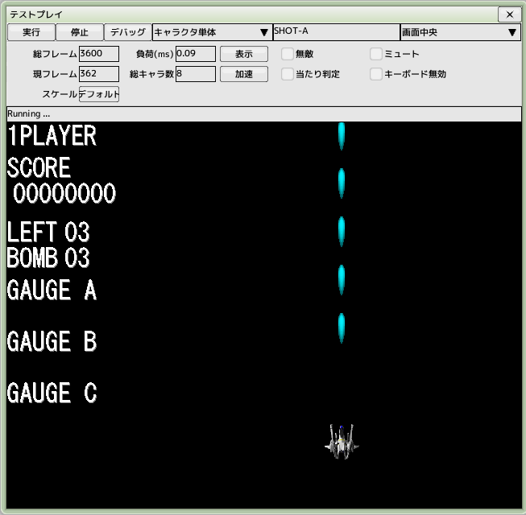

■元のページへ戻る
■元のページへ戻る
3.プレイヤーの弾を作成する
弾に必要なパーツは「キャラクタ」「スクリプト」の二つになります
前回のチュートリアルで作成したプロジェクトファイルを開いておいてください

弾用キャラクタの作成
キャラクタを新規作成し、名前を'SHOT-A'とします
種類...対空対地攻撃
アトリビュートフラグ...右図の通りにチェックをいれます
スプライト...以前作成した'MYSHIP'を追加します
スクリプト...新規ボタンをクリックして作成します（リストには自動で追加されます）
パターン番号や攻撃力はプレイヤー編集の武器項目で設定するのでここでは不要です

プレイヤーに弾を追加する
以前作成したプレイヤー'TYPE-A'を開き、武器設定タブを編集します
武器リストの追加ボタンをクリックして武器を一つ新規作成します
武器名を'SHOT'、最大レベル0（パワーアップしない）にします
Lv.0タブをクリックして弾リストの追加ボタンをクリックします
キャラクタ...'SHOT-A'を選択
リピートウエイト...4
移動速度Y...-1000
パターン番号...14
攻撃力...10

弾にスクリプトを追加する
以前作成したスクリプト'SHOT-A'を開きます
タスク「0：メイン」を選択します
制御グループから「通過パネル」を制御フィールドへドラッグ＆ドロップします
通過パネルを選択し時間待ちの項目を動作完了までにします
これで何もせずに直進するスクリプトになります
初速はプレイヤーから発射時に自動設定されています

スクリプト編集の続き
タスク「9：攻撃ヒット」を選択します
制御フィールドを右クリックしてメニューを出し、「ゲート作成」を選択します
左上に「GATE」が出現すれば次へ進みます
制御グループから「消滅パネル」を制御フィールドへドラッグ＆ドロップします
タスク「9:攻撃ヒット」は弾が敵に命中したときに起動します
命中時に弾を消滅させます

テスト実行する
完了したらテスト実行し、Zキーで弾が発射できることを確認します
■ページ上部へ戻る